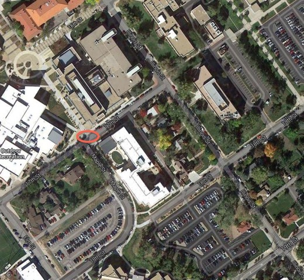
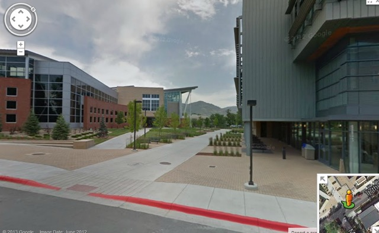

Frequently Asked Questions
Q: What happens after I register?
A: We will be in contact with you after the registration deadline with more logistical information such as session placement and classroom location. There is a high probability that your daughter will be placed in her first session choice; thus, once you register, mark your calendar!
Q: If it is after the registration deadline, and I would still like to register, what should I do?
A: Please complete the registration form, and then send email to stem-tech@mines.edu so that we can immediately find placement for your daughter.
Q: What is the course content?
A: Course content changes with each semester. Every three years or so (with a brand new set of participants), we repeat activities that the girls really enjoyed, and replace the ones that were just "ok." This means that if your daughter attends the program for 4 years (3rd - 6th grade), she will not repeat activities her full 4-year attendance. Following is a list of typical topics and activities included in our program.
Grades 3/4:
- civil engineering (girls work for Three Little Pigs Construction Company) and try to build a house that can't be blown down
- computer science (girls learn about a piece of paper that is more intelligent than everyone in the room)
- mechanical engineering (demos and time to engage with robotics and electronics)
- chemistry (chemistry magic show performed by Mines Chemistry professor)
Grades 5/6:
- engineering design (where girls create a design of a device, and then implement someone else's design)
- biomedical engineering (where girls build a prosthetic leg)
- physics (where girls learn about astronomy and space)
- geology (where girls learn about rocks and processes)
Q: How do I pay for camp?
A: The preferred method of payment is by credit card. After you submit your registration form, you will be prompted to visit this site to complete payment: https://stemtech.csmspace.com. You may also visit this website at any time prior to the start of the program to complete your payment.
Q: How do I apply for a scholarship?
A: Thanks to several companies that partner with the CS Division at Mines, we are able to offer funding for those in need. In order to apply for a scholarship, send email to lmaddux@mines.edu which includes the following information:
- Child's Name
- Child's Grade
- Child's School
- Demonstrated need (e.g. qualification for free and reduced lunch, unemployment, single parent)
If we have scholarship money available, we are happy to grant funding, and will respond via email accordingly.
Q: How do I drop off/pick up my daughter?
A: Directions to Mines campus are available here.
A map of the campus is here.
Brown is #10 on the map (at the Maple and 17th Street intersection). You will drop off (and pick-up) your daughter near Brown Building.
The drop off area will be across from where Maple meets 17th, at the curb painted red. See these maps for an illustration.


Drop off time: 4:10-4:25pm
Pick up time: 5:45-6:00pm
Q: Am I allowed to sit in on the classes?
A: Often the rooms we use will not have space for parents to sit in. If you feel sitting in would help your daughter be more comfortable, then email stem-tech@mines.edu and we will try to make arrangements.
Q: What if my daughter is sick and misses a class?
A: We cover the same content in different sessions all week; if space exists, your daughter is welcome to do a make-up class that week (e.g., normally she attends on Tuesdays, but will attend on Wednesday this week). Send email to stem-tech@mines.edu to request a make-up day.
Q: If I know ahead of time that my daughter will miss a day, should I let someone know?
A: If you are able to do a make-up on another day that week, then email stem-tech@mines.edu and request a make-up day. (See previous question/answer for more details.)
Q: Can my daughter be placed with her friend from school?
A: We make every effort to honor these requests.
Q: Who are the DISCOVER TECH teachers and how are they chosen?
A: All DISCOVER TECH teachers are current Mines female students who love engaging the next generation in science and engineering projects. They are chosen through an application/interview process, and then hired after a background check is done.
Q: What is the teacher/child ratio?
A: Each class will have either up to 15 students (with 2 teachers) or up to 20 students (with 3 teachers).
Q: My daughter has medical issues. Can she still participate?
A: Please email stem-tech@mines.edu with details. We are happy to work with you and make appropriate accommodations.
Q: How will I be notified if a class is cancelled due to weather?
A: As long as Mines does not cancel class, the class will not be canceled. If Mines closes, email will be sent to all parents.
Q: When are the program t-shirts distributed?
A: One participant t-shirt is included in the program fee and will be distributed the first day of class. If your child misses class or registers late, contact stem-tech@mines.edu to arrange for pick up. If an additional t-shirt is purchased, it can also be picked up on the first day of class, or, picked up by arrangement with program staff.